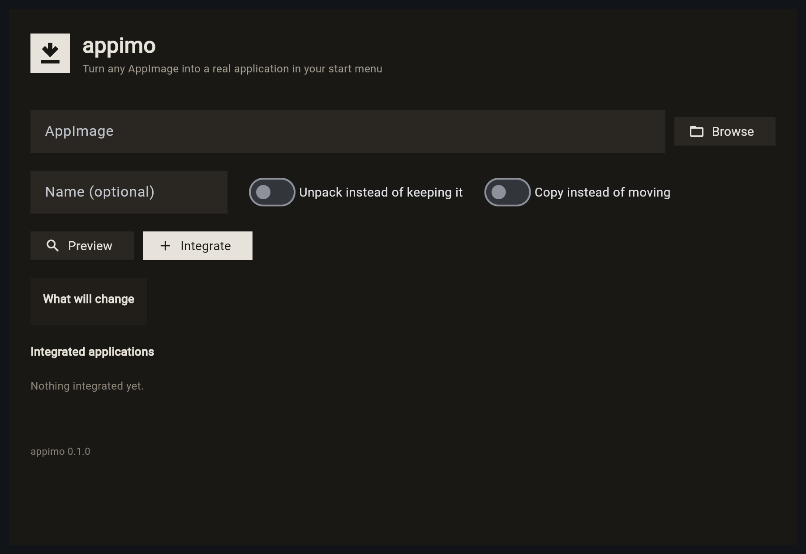

Invisible to your launcher
No .desktop entry means no result in search, no pin in
the dock, no tile in Activities. The app exists; the desktop doesn't
know it.
A launcher in your start menu, the right icon, the right name, in a place that survives a reboot. One command, or one click — on any Linux distro.
$ curl -fsSL https://appimo.vercel.app/install.sh | sh
Prefer to read it first?
curl -fsSLO https://appimo.vercel.app/install.sh && less install.sh
— or pipx install appimo.
No root. Ever.
It never asked to be in your menu. So it isn't. No launcher, no icon, no
search result, no apt remove — just another 200 MB in
~/Downloads that you keep re-downloading because you can't
remember where you put it.
No .desktop entry means no result in search, no pin in
the dock, no tile in Activities. The app exists; the desktop doesn't
know it.
Every other app has a name and a picture. Yours has whatever
Downloads/Inkscape-1.4-x86_64.AppImage says.
Nothing updates it, nothing tracks it, nothing uninstalls it. When the version on disk dies, nothing tells you.
Give Appimo an .AppImage — a path in the terminal, or
a drag into the window.
It reads the bundle's own desktop file and icon, puts the file somewhere stable, and writes the launcher.
The app appears in your start menu like it was always there.
appimo remove takes it all away again.
$ appimo install ~/Downloads/Cursor-0.45.AppImage
reading Cursor-0.45.AppImage
name Cursor
id dev.appimo.cursor
icon found 256x256 PNG
moved ~/Applications/Cursor.AppImage
launcher ~/.local/share/applications/
dev.appimo.cursor.desktop
✓ Launch "Cursor" from your start menu
$ appimo remove cursorappimo for your terminal, appimo gui for a
window. One engine, so they never disagree.
Everything lands in ~/.local and
~/Applications. Nothing touches /usr, so
nothing fights your package manager.
Ubuntu, Debian, Fedora, Arch, openSUSE — and immutable images like Silverblue, Kinoite, Bazzite and SteamOS.
Leave the AppImage intact, or unpack it for systems without working FUSE. It's reversible either way.
Name, icon, categories and MIME types read from the bundle itself — never guessed from the filename.
Metadata is read straight out of the SquashFS at its offset. It does not run a file you just downloaded to ask what it is.
appimo remove takes out the launcher, the icon and the
file. Nothing left behind to find later.
--json, --dry-run, real exit codes, and
appimo doctor when an old AppImage won't mount.
Drop an AppImage on the window, check the name and icon Appimo found, and click Integrate. Everything the CLI does, with a preview of exactly what it's about to change before it changes it.
Included with the CLI: appimo gui

Appimo only ever writes to your home directory, so it behaves the same on a conventional system and on a read-only one. We'd rather label an untested distro than claim one.
| System | Status | Notes |
|---|---|---|
| Ubuntu / Debian | Tested | Per-user install; FUSE 2 is libfuse2t64 on 24.04+ |
| Fedora / RHEL | Tested | fuse/fuse-libs only needed by older AppImages |
| Arch / Manjaro | Tested | fuse2 for pre-2023 bundles |
| openSUSE | Tested | fuse + libfuse2 |
| Silverblue / Kinoite / Bazzite / SteamOS | Tested | User paths only; never writes to /usr |
| Everything else | Should work | Any freedesktop desktop qualifies — but untested is untested |
Having trouble? appimo doctor explains the failure and the
fix — missing unsquashfs, FUSE 2, or a lost execute bit.
Nothing outside your home directory. Appimo reads the AppImage, writes
one .desktop file and one icon, and moves the file itself.
It never runs the app to inspect it and never uses sudo.
appimo install --dry-run prints every change before
anything happens.
No. That's a hard rule, not a preference. A GUI app running as root is a security problem, and it creates root-owned files in your home directory. Appimo refuses to run as root rather than risk either.
FUSE 2 was dropped from some newer systems, and pre-2023 AppImages
still want it. Appimo detects that and offers --extract
instead of mount, or tells you which FUSE package your distro needs.
appimo doctor explains the failure instead of dumping a
mount error.
That's the case Appimo is designed around: everything is per-user, so
it works the same on Silverblue or Bazzite as it does on Arch. Only your
application file's location changes. Nothing writes to /usr.
appimo remove <name>. The launcher, the icon and
the AppImage go away. Keep the file with --keep-files.
They're good, and we've learned from them. Gear Lever is a GUI that
also has a CLI; AppImageLauncher installs as a system package with deep
hooks; appimaged watches directories behind your back.
Appimo's bet is different: a first-class CLI for scripted and headless
use, a GUI for everyone else, everything per-user, explicit about what it
changes, and honest when it can't.
It should be: only the freedesktop XDG directories are involved, which every desktop honours. The table above separates what we've actually tested from what we merely expect to work, and we'll update it as reports come in.
GPL-3.0. Fork it, package it, ship it. See the repository.